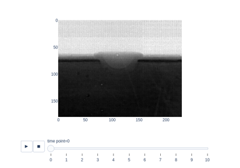
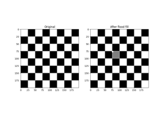
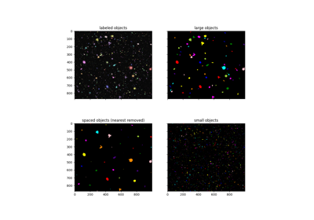
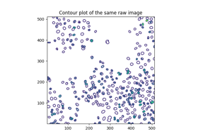
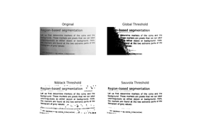
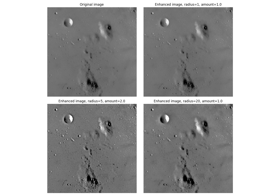

skimage.filters#
Apply hysteresis thresholding to |
|
Apply a Butterworth filter to enhance high or low frequency features. |
|
Compute valid cross-correlation of |
|
Find features between |
|
Find the edge magnitude using the Farid transform. |
|
Find the horizontal edges of an image using the Farid transform. |
|
Find the vertical edges of an image using the Farid transform. |
|
Apply the given filter to data. |
|
Apply the filter in reverse to the given data. |
|
Filter an image with the Frangi vesselness filter. |
|
Return real and imaginary responses to Gabor filter. |
|
Return complex 2D Gabor filter kernel. |
|
Multi-dimensional Gaussian filter. |
|
Filter an image with the Hybrid Hessian filter. |
|
Find the edges of an image using the Laplace operator. |
|
Return local median of an image. |
|
Filter an image with the Meijering neuriteness filter. |
|
Find the edge magnitude using the Prewitt transform. |
|
Find the horizontal edges of an image using the Prewitt transform. |
|
Find the vertical edges of an image using the Prewitt transform. |
|
Return an image of the same shape where each pixel is the index of the pixel value in the ascending order of the unique values of |
|
Find the edge magnitude using Roberts' cross operator. |
|
Find the cross edges of an image using the Roberts' Cross operator. |
|
Find the cross edges of an image using Roberts' cross operator. |
|
Filter an image with the Sato tubeness filter. |
|
Find the edge magnitude using the Scharr transform. |
|
Find the horizontal edges of an image using the Scharr transform. |
|
Find the vertical edges of an image using the Scharr transform. |
|
Find edges in an image using the Sobel filter. |
|
Find the horizontal edges of an image using the Sobel transform. |
|
Find the vertical edges of an image using the Sobel transform. |
|
Return threshold value(s) based on ISODATA method. |
|
Compute threshold value by Li's iterative Minimum Cross Entropy method. |
|
Compute a threshold mask image based on local pixel neighborhood. |
|
Return threshold value based on the mean of grayscale values. |
|
Return threshold value based on minimum method. |
|
Generate |
|
Applies Niblack local threshold to an array. |
|
Return threshold value based on Otsu's method. |
|
Applies Sauvola local threshold to an array. |
|
Return threshold value based on the triangle algorithm. |
|
Return threshold value based on Yen's method. |
|
Returns a figure comparing the outputs of different thresholding methods. |
|
Unsharp masking filter. |
|
Minimum Mean Square Error (Wiener) inverse filter. |
|
Return an n-dimensional window of a given size and dimensionality. |
|
Linear Position-Invariant Filter (2-dimensional) |
|
- skimage.filters.apply_hysteresis_threshold(image, low, high)[source]#
Apply hysteresis thresholding to
image.This algorithm finds regions where
imageis greater thanhighORimageis greater thanlowand that region is connected to a region greater thanhigh.- Parameters:
- image(M[, …]) ndarray
Grayscale input image.
- lowfloat, or array of same shape as
image Lower threshold.
- highfloat, or array of same shape as
image Higher threshold.
- Returns:
- thresholded(M[, …]) array of bool
Array in which
Trueindicates the locations whereimagewas above the hysteresis threshold.
References
[1]J. Canny. A computational approach to edge detection. IEEE Transactions on Pattern Analysis and Machine Intelligence. 1986; vol. 8, pp.679-698. DOI:10.1109/TPAMI.1986.4767851
Examples
>>> image = np.array([1, 2, 3, 2, 1, 2, 1, 3, 2]) >>> apply_hysteresis_threshold(image, 1.5, 2.5).astype(int) array([0, 1, 1, 1, 0, 0, 0, 1, 1])

Use pixel graphs to find an object’s geodesic center
Use pixel graphs to find an object's geodesic center

- skimage.filters.butterworth(image, cutoff_frequency_ratio=0.005, high_pass=True, order=2.0, channel_axis=None, *, squared_butterworth=True, npad=0)[source]#
Apply a Butterworth filter to enhance high or low frequency features.
This filter is defined in the Fourier domain.
- Parameters:
- image(M[, N[, …, P]][, C]) ndarray
Input image.
- cutoff_frequency_ratiofloat, optional
Determines the position of the cut-off relative to the shape of the FFT. Receives a value between [0, 0.5].
- high_passbool, optional
Whether to perform a high pass filter. If False, a low pass filter is performed.
- orderfloat, optional
Order of the filter which affects the slope near the cut-off. Higher order means steeper slope in frequency space.
- channel_axisint, optional
If there is a channel dimension, provide the index here. If None (default) then all axes are assumed to be spatial dimensions.
- squared_butterworthbool, optional
When True, the square of a Butterworth filter is used. See notes below for more details.
- npadint, optional
Pad each edge of the image by
npadpixels usingnumpy.pad’smode='edge'extension.
- Returns:
- resultndarray
The Butterworth-filtered image.
Notes
A band-pass filter can be achieved by combining a high-pass and low-pass filter. The user can increase
npadif boundary artifacts are apparent.The “Butterworth filter” used in image processing textbooks (e.g. [1], [2]) is often the square of the traditional Butterworth filters as described by [3], [4]. The squared version will be used here if
squared_butterworthis set toTrue. The lowpass, squared Butterworth filter is given by the following expression for the lowpass case:\[H_{low}(f) = \frac{1}{1 + \left(\frac{f}{c f_s}\right)^{2n}}\]with the highpass case given by
\[H_{hi}(f) = 1 - H_{low}(f)\]where \(f=\sqrt{\sum_{d=0}^{\mathrm{ndim}} f_{d}^{2}}\) is the absolute value of the spatial frequency, \(f_s\) is the sampling frequency, \(c\) the
cutoff_frequency_ratio, and \(n\) is the filterorder[1]. Whensquared_butterworth=False, the square root of the above expressions are used instead.Note that
cutoff_frequency_ratiois defined in terms of the sampling frequency, \(f_s\). The FFT spectrum covers the Nyquist range (\([-f_s/2, f_s/2]\)) socutoff_frequency_ratioshould have a value between 0 and 0.5. The frequency response (gain) at the cutoff is 0.5 whensquared_butterworthis true and \(1/\sqrt{2}\) when it is false.References
[2]Birchfield, Stan. Image Processing and Analysis. 2018. Cengage Learning.
[3]Butterworth, Stephen. “On the theory of filter amplifiers.” Wireless Engineer 7.6 (1930): 536-541.
Examples
Apply a high-pass and low-pass Butterworth filter to a grayscale and color image respectively:
>>> from skimage.data import camera, astronaut >>> from skimage.filters import butterworth >>> high_pass = butterworth(camera(), 0.07, True, 8) >>> low_pass = butterworth(astronaut(), 0.01, False, 4, channel_axis=-1)

- skimage.filters.correlate_sparse(image, kernel, mode='reflect')[source]#
Compute valid cross-correlation of
padded_arrayandkernel.This function is fast when
kernelis large with many zeros.See
scipy.ndimage.correlatefor a description of cross-correlation.- Parameters:
- imagendarray, dtype float, shape (M, N[, …], P)
The input array. If mode is ‘valid’, this array should already be padded, as a margin of the same shape as kernel will be stripped off.
- kernelndarray, dtype float, shape (Q, R[, …], S)
The kernel to be correlated. Must have the same number of dimensions as
padded_array. For high performance, it should be sparse (few nonzero entries).- modestring, optional
See
scipy.ndimage.correlatefor valid modes. Additionally, mode ‘valid’ is accepted, in which case no padding is applied and the result is the result for the smaller image for which the kernel is entirely inside the original data.
- Returns:
- resultarray of float, shape (M, N[, …], P)
The result of cross-correlating
imagewithkernel. If mode ‘valid’ is used, the resulting shape is (M-Q+1, N-R+1[, …], P-S+1).
- skimage.filters.difference_of_gaussians(image, low_sigma, high_sigma=None, *, mode='nearest', cval=0, channel_axis=None, truncate=4.0)[source]#
Find features between
low_sigmaandhigh_sigmain size.This function uses the Difference of Gaussians method for applying band-pass filters to multi-dimensional arrays. The input array is blurred with two Gaussian kernels of differing sigmas to produce two intermediate, filtered images. The more-blurred image is then subtracted from the less-blurred image. The final output image will therefore have had high-frequency components attenuated by the smaller-sigma Gaussian, and low frequency components will have been removed due to their presence in the more-blurred intermediate.
- Parameters:
- imagendarray
Input array to filter.
- low_sigmascalar or sequence of scalars
Standard deviation(s) for the Gaussian kernel with the smaller sigmas across all axes. The standard deviations are given for each axis as a sequence, or as a single number, in which case the single number is used as the standard deviation value for all axes.
- high_sigmascalar or sequence of scalars, optional (default is None)
Standard deviation(s) for the Gaussian kernel with the larger sigmas across all axes. The standard deviations are given for each axis as a sequence, or as a single number, in which case the single number is used as the standard deviation value for all axes. If None is given (default), sigmas for all axes are calculated as 1.6 * low_sigma.
- mode{‘reflect’, ‘constant’, ‘nearest’, ‘mirror’, ‘wrap’}, optional
The
modeparameter determines how the array borders are handled, wherecvalis the value when mode is equal to ‘constant’. Default is ‘nearest’.- cvalscalar, optional
Value to fill past edges of input if
modeis ‘constant’. Default is 0.0- channel_axisint or None, optional
If None, the image is assumed to be a grayscale (single channel) image. Otherwise, this parameter indicates which axis of the array corresponds to channels.
Added in version 0.19:
channel_axiswas added in 0.19.- truncatefloat, optional (default is 4.0)
Truncate the filter at this many standard deviations.
- Returns:
- filtered_imagendarray
the filtered array.
See also
Notes
This function will subtract an array filtered with a Gaussian kernel with sigmas given by
high_sigmafrom an array filtered with a Gaussian kernel with sigmas provided bylow_sigma. The values forhigh_sigmamust always be greater than or equal to the corresponding values inlow_sigma, or aValueErrorwill be raised.When
high_sigmais none, the values forhigh_sigmawill be calculated as 1.6x the corresponding values inlow_sigma. This ratio was originally proposed by Marr and Hildreth (1980) [1] and is commonly used when approximating the inverted Laplacian of Gaussian, which is used in edge and blob detection.Input image is converted according to the conventions of
img_as_float.Except for sigma values, all parameters are used for both filters.
References
[1]Marr, D. and Hildreth, E. Theory of Edge Detection. Proc. R. Soc. Lond. Series B 207, 187-217 (1980). https://doi.org/10.1098/rspb.1980.0020
Examples
Apply a simple Difference of Gaussians filter to a color image:
>>> from skimage.data import astronaut >>> from skimage.filters import difference_of_gaussians >>> filtered_image = difference_of_gaussians(astronaut(), 2, 10, ... channel_axis=-1)
Apply a Laplacian of Gaussian filter as approximated by the Difference of Gaussians filter:
>>> filtered_image = difference_of_gaussians(astronaut(), 2, ... channel_axis=-1)
Apply a Difference of Gaussians filter to a grayscale image using different sigma values for each axis:
>>> from skimage.data import camera >>> filtered_image = difference_of_gaussians(camera(), (2,5), (3,20))

Using Polar and Log-Polar Transformations for Registration
Using Polar and Log-Polar Transformations for Registration

- skimage.filters.farid(image, mask=None, *, axis=None, mode='reflect', cval=0.0)[source]#
Find the edge magnitude using the Farid transform.
- Parameters:
- imagearray
The input image.
- maskarray of bool, optional
Clip the output image to this mask. (Values where mask=0 will be set to 0.)
- axisint or sequence of int, optional
Compute the edge filter along this axis. If not provided, the edge magnitude is computed. This is defined as:
farid_mag = np.sqrt(sum([farid(image, axis=i)**2 for i in range(image.ndim)]) / image.ndim)
The magnitude is also computed if axis is a sequence.
- modestr or sequence of str, optional
The boundary mode for the convolution. See
scipy.ndimage.convolvefor a description of the modes. This can be either a single boundary mode or one boundary mode per axis.- cvalfloat, optional
When
modeis'constant', this is the constant used in values outside the boundary of the image data.
- Returns:
- outputarray of float
The Farid edge map.
See also
Notes
Take the square root of the sum of the squares of the horizontal and vertical derivatives to get a magnitude that is somewhat insensitive to direction. Similar to the Scharr operator, this operator is designed with a rotation invariance constraint.
References
[1]Farid, H. and Simoncelli, E. P., “Differentiation of discrete multidimensional signals”, IEEE Transactions on Image Processing 13(4): 496-508, 2004. DOI:10.1109/TIP.2004.823819
[2]Wikipedia, “Farid and Simoncelli Derivatives.” Available at: <https://en.wikipedia.org/wiki/Image_derivatives#Farid_and_Simoncelli_Derivatives>
Examples
>>> from skimage import data >>> camera = data.camera() >>> from skimage import filters >>> edges = filters.farid(camera)
- skimage.filters.farid_h(image, *, mask=None)[source]#
Find the horizontal edges of an image using the Farid transform.
- Parameters:
- image2-D array
Image to process.
- mask2-D array, optional
An optional mask to limit the application to a certain area. Note that pixels surrounding masked regions are also masked to prevent masked regions from affecting the result.
- Returns:
- output2-D array
The Farid edge map.
Notes
The kernel was constructed using the 5-tap weights from [1].
References
[1]Farid, H. and Simoncelli, E. P., “Differentiation of discrete multidimensional signals”, IEEE Transactions on Image Processing 13(4): 496-508, 2004. DOI:10.1109/TIP.2004.823819
[2]Farid, H. and Simoncelli, E. P. “Optimally rotation-equivariant directional derivative kernels”, In: 7th International Conference on Computer Analysis of Images and Patterns, Kiel, Germany. Sep, 1997.

- skimage.filters.farid_v(image, *, mask=None)[source]#
Find the vertical edges of an image using the Farid transform.
- Parameters:
- image2-D array
Image to process.
- mask2-D array, optional
An optional mask to limit the application to a certain area. Note that pixels surrounding masked regions are also masked to prevent masked regions from affecting the result.
- Returns:
- output2-D array
The Farid edge map.
Notes
The kernel was constructed using the 5-tap weights from [1].
References
[1]Farid, H. and Simoncelli, E. P., “Differentiation of discrete multidimensional signals”, IEEE Transactions on Image Processing 13(4): 496-508, 2004. DOI:10.1109/TIP.2004.823819
- skimage.filters.filter_forward(data, impulse_response=None, filter_params=None, predefined_filter=None)[source]#
Apply the given filter to data.
- Parameters:
- data(M, N) ndarray
Input data.
- impulse_responsecallable
f(r, c, **filter_params) Impulse response of the filter. See LPIFilter2D.__init__.
- filter_paramsdict, optional
Additional keyword parameters to the impulse_response function.
- Other Parameters:
- predefined_filterLPIFilter2D
If you need to apply the same filter multiple times over different images, construct the LPIFilter2D and specify it here.
Examples
Gaussian filter without normalization:
>>> def filt_func(r, c, sigma=1): ... return np.exp(-(r**2 + c**2)/(2 * sigma**2)) >>> >>> from skimage import data >>> filtered = filter_forward(data.coins(), filt_func)
- skimage.filters.filter_inverse(data, impulse_response=None, filter_params=None, max_gain=2, predefined_filter=None)[source]#
Apply the filter in reverse to the given data.
- Parameters:
- data(M, N) ndarray
Input data.
- impulse_responsecallable
f(r, c, **filter_params) Impulse response of the filter. See
LPIFilter2D. This is a required argument unless apredifined_filteris provided.- filter_paramsdict, optional
Additional keyword parameters to the impulse_response function.
- max_gainfloat, optional
Limit the filter gain. Often, the filter contains zeros, which would cause the inverse filter to have infinite gain. High gain causes amplification of artefacts, so a conservative limit is recommended.
- Other Parameters:
- predefined_filterLPIFilter2D, optional
If you need to apply the same filter multiple times over different images, construct the LPIFilter2D and specify it here.
- skimage.filters.frangi(image, sigmas=range(1, 10, 2), scale_range=None, scale_step=None, alpha=0.5, beta=0.5, gamma=None, black_ridges=True, mode='reflect', cval=0)[source]#
Filter an image with the Frangi vesselness filter.
This filter can be used to detect continuous ridges, e.g. vessels, wrinkles, rivers. It can be used to calculate the fraction of the whole image containing such objects.
Defined only for 2-D and 3-D images. Calculates the eigenvalues of the Hessian to compute the similarity of an image region to vessels, according to the method described in [1].
- Parameters:
- image(M, N[, P]) ndarray
Array with input image data.
- sigmasiterable of floats, optional
Sigmas used as scales of filter, i.e., np.arange(scale_range[0], scale_range[1], scale_step)
- scale_range2-tuple of floats, optional
The range of sigmas used.
- scale_stepfloat, optional
Step size between sigmas.
- alphafloat, optional
Frangi correction constant that adjusts the filter’s sensitivity to deviation from a plate-like structure.
- betafloat, optional
Frangi correction constant that adjusts the filter’s sensitivity to deviation from a blob-like structure.
- gammafloat, optional
Frangi correction constant that adjusts the filter’s sensitivity to areas of high variance/texture/structure. The default, None, uses half of the maximum Hessian norm.
- black_ridgesboolean, optional
When True (the default), the filter detects black ridges; when False, it detects white ridges.
- mode{‘constant’, ‘reflect’, ‘wrap’, ‘nearest’, ‘mirror’}, optional
How to handle values outside the image borders.
- cvalfloat, optional
Used in conjunction with mode ‘constant’, the value outside the image boundaries.
- Returns:
- out(M, N[, P]) ndarray
Filtered image (maximum of pixels across all scales).
Notes
Earlier versions of this filter were implemented by Marc Schrijver, (November 2001), D. J. Kroon, University of Twente (May 2009) [2], and D. G. Ellis (January 2017) [3].
References
[1]Frangi, A. F., Niessen, W. J., Vincken, K. L., & Viergever, M. A. (1998,). Multiscale vessel enhancement filtering. In International Conference on Medical Image Computing and Computer-Assisted Intervention (pp. 130-137). Springer Berlin Heidelberg. DOI:10.1007/BFb0056195
[2]Kroon, D. J.: Hessian based Frangi vesselness filter.
[3]Ellis, D. G.: ellisdg/frangi3d

- skimage.filters.gabor(image, frequency, theta=0, bandwidth=1, sigma_x=None, sigma_y=None, n_stds=3, offset=0, mode='reflect', cval=0)[source]#
Return real and imaginary responses to Gabor filter.
The real and imaginary parts of the Gabor filter kernel are applied to the image and the response is returned as a pair of arrays.
Gabor filter is a linear filter with a Gaussian kernel which is modulated by a sinusoidal plane wave. Frequency and orientation representations of the Gabor filter are similar to those of the human visual system. Gabor filter banks are commonly used in computer vision and image processing. They are especially suitable for edge detection and texture classification.
- Parameters:
- image2-D array
Input image.
- frequencyfloat
Spatial frequency of the harmonic function. Specified in pixels.
- thetafloat, optional
Orientation in radians. If 0, the harmonic is in the x-direction.
- bandwidthfloat, optional
The bandwidth captured by the filter. For fixed bandwidth,
sigma_xandsigma_ywill decrease with increasing frequency. This value is ignored ifsigma_xandsigma_yare set by the user.- sigma_x, sigma_yfloat, optional
Standard deviation in x- and y-directions. These directions apply to the kernel before rotation. If
theta = pi/2, then the kernel is rotated 90 degrees so thatsigma_xcontrols the vertical direction.- n_stdsscalar, optional
The linear size of the kernel is n_stds (3 by default) standard deviations.
- offsetfloat, optional
Phase offset of harmonic function in radians.
- mode{‘constant’, ‘nearest’, ‘reflect’, ‘mirror’, ‘wrap’}, optional
Mode used to convolve image with a kernel, passed to
ndi.convolve- cvalscalar, optional
Value to fill past edges of input if
modeof convolution is ‘constant’. The parameter is passed tondi.convolve.
- Returns:
- real, imagarrays
Filtered images using the real and imaginary parts of the Gabor filter kernel. Images are of the same dimensions as the input one.
References
Examples
>>> from skimage.filters import gabor >>> from skimage import data >>> from matplotlib import pyplot as plt
>>> image = data.coins() >>> # detecting edges in a coin image >>> filt_real, filt_imag = gabor(image, frequency=0.6) >>> fix, ax = plt.subplots() >>> ax.imshow(filt_real) >>> plt.show()
>>> # less sensitivity to finer details with the lower frequency kernel >>> filt_real, filt_imag = gabor(image, frequency=0.1) >>> fig, ax = plt.subplots() >>> ax.imshow(filt_real) >>> plt.show()
- skimage.filters.gabor_kernel(frequency, theta=0, bandwidth=1, sigma_x=None, sigma_y=None, n_stds=3, offset=0, dtype=<class 'numpy.complex128'>)[source]#
Return complex 2D Gabor filter kernel.
Gabor kernel is a Gaussian kernel modulated by a complex harmonic function. Harmonic function consists of an imaginary sine function and a real cosine function. Spatial frequency is inversely proportional to the wavelength of the harmonic and to the standard deviation of a Gaussian kernel. The bandwidth is also inversely proportional to the standard deviation.
- Parameters:
- frequencyfloat
Spatial frequency of the harmonic function. Specified in pixels.
- thetafloat, optional
Orientation in radians. If 0, the harmonic is in the x-direction.
- bandwidthfloat, optional
The bandwidth captured by the filter. For fixed bandwidth,
sigma_xandsigma_ywill decrease with increasing frequency. This value is ignored ifsigma_xandsigma_yare set by the user.- sigma_x, sigma_yfloat, optional
Standard deviation in x- and y-directions. These directions apply to the kernel before rotation. If
theta = pi/2, then the kernel is rotated 90 degrees so thatsigma_xcontrols the vertical direction.- n_stdsscalar, optional
The linear size of the kernel is n_stds (3 by default) standard deviations
- offsetfloat, optional
Phase offset of harmonic function in radians.
- dtype{np.complex64, np.complex128}
Specifies if the filter is single or double precision complex.
- Returns:
- gcomplex array
Complex filter kernel.
References
Examples
>>> from skimage.filters import gabor_kernel >>> from matplotlib import pyplot as plt
>>> gk = gabor_kernel(frequency=0.2) >>> fig, ax = plt.subplots() >>> ax.imshow(gk.real) >>> plt.show()
>>> # more ripples (equivalent to increasing the size of the >>> # Gaussian spread) >>> gk = gabor_kernel(frequency=0.2, bandwidth=0.1) >>> fig, ax = plt.suplots() >>> ax.imshow(gk.real) >>> plt.show()

- skimage.filters.gaussian(image, sigma=1, *, mode='nearest', cval=0, preserve_range=False, truncate=4.0, channel_axis=None, out=None)[source]#
Multi-dimensional Gaussian filter.
- Parameters:
- imagendarray
Input image (grayscale or color) to filter.
- sigmascalar or sequence of scalars, optional
Standard deviation for Gaussian kernel. The standard deviations of the Gaussian filter are given for each axis as a sequence, or as a single number, in which case it is equal for all axes.
- mode{‘reflect’, ‘constant’, ‘nearest’, ‘mirror’, ‘wrap’}, optional
The
modeparameter determines how the array borders are handled, wherecvalis the value when mode is equal to ‘constant’. Default is ‘nearest’.- cvalscalar, optional
Value to fill past edges of input if
modeis ‘constant’. Default is 0.0- preserve_rangebool, optional
If True, keep the original range of values. Otherwise, the input
imageis converted according to the conventions ofimg_as_float(Normalized first to values [-1.0 ; 1.0] or [0 ; 1.0] depending on dtype of input)For more information, see: https://scikit-image.org/docs/dev/user_guide/data_types.html
- truncatefloat, optional
Truncate the filter at this many standard deviations.
- channel_axisint or None, optional
If None, the image is assumed to be a grayscale (single channel) image. Otherwise, this parameter indicates which axis of the array corresponds to channels.
Added in version 0.19:
channel_axiswas added in 0.19.- outndarray, optional
If given, the filtered image will be stored in this array.
Added in version 0.23:
outwas added in 0.23.
- Returns:
- filtered_imagendarray
the filtered array
Notes
This function is a wrapper around
scipy.ndimage.gaussian_filter().Integer arrays are converted to float.
outshould be of floating-point data type sincegaussianconverts the inputimageto float. Ifoutis not provided, another array will be allocated and returned as the result.The multi-dimensional filter is implemented as a sequence of one-dimensional convolution filters. The intermediate arrays are stored in the same data type as the output. Therefore, for output types with a limited precision, the results may be imprecise because intermediate results may be stored with insufficient precision.
Examples
>>> import skimage as ski >>> a = np.zeros((3, 3)) >>> a[1, 1] = 1 >>> a array([[0., 0., 0.], [0., 1., 0.], [0., 0., 0.]]) >>> ski.filters.gaussian(a, sigma=0.4) # mild smoothing array([[0.00163116, 0.03712502, 0.00163116], [0.03712502, 0.84496158, 0.03712502], [0.00163116, 0.03712502, 0.00163116]]) >>> ski.filters.gaussian(a, sigma=1) # more smoothing array([[0.05855018, 0.09653293, 0.05855018], [0.09653293, 0.15915589, 0.09653293], [0.05855018, 0.09653293, 0.05855018]]) >>> # Several modes are possible for handling boundaries >>> ski.filters.gaussian(a, sigma=1, mode='reflect') array([[0.08767308, 0.12075024, 0.08767308], [0.12075024, 0.16630671, 0.12075024], [0.08767308, 0.12075024, 0.08767308]]) >>> # For RGB images, each is filtered separately >>> image = ski.data.astronaut() >>> filtered_img = ski.filters.gaussian(image, sigma=1, channel_axis=-1)
Track solidification of a metallic alloy
Track solidification of a metallic alloy
Measure fluorescence intensity at the nuclear envelope
Measure fluorescence intensity at the nuclear envelope


- skimage.filters.hessian(image, sigmas=range(1, 10, 2), scale_range=None, scale_step=None, alpha=0.5, beta=0.5, gamma=15, black_ridges=True, mode='reflect', cval=0)[source]#
Filter an image with the Hybrid Hessian filter.
This filter can be used to detect continuous edges, e.g. vessels, wrinkles, rivers. It can be used to calculate the fraction of the whole image containing such objects.
Defined only for 2-D and 3-D images. Almost equal to Frangi filter, but uses alternative method of smoothing. Refer to [1] to find the differences between Frangi and Hessian filters.
- Parameters:
- image(M, N[, P]) ndarray
Array with input image data.
- sigmasiterable of floats, optional
Sigmas used as scales of filter, i.e., np.arange(scale_range[0], scale_range[1], scale_step)
- scale_range2-tuple of floats, optional
The range of sigmas used.
- scale_stepfloat, optional
Step size between sigmas.
- betafloat, optional
Frangi correction constant that adjusts the filter’s sensitivity to deviation from a blob-like structure.
- gammafloat, optional
Frangi correction constant that adjusts the filter’s sensitivity to areas of high variance/texture/structure.
- black_ridgesboolean, optional
When True (the default), the filter detects black ridges; when False, it detects white ridges.
- mode{‘constant’, ‘reflect’, ‘wrap’, ‘nearest’, ‘mirror’}, optional
How to handle values outside the image borders.
- cvalfloat, optional
Used in conjunction with mode ‘constant’, the value outside the image boundaries.
- Returns:
- out(M, N[, P]) ndarray
Filtered image (maximum of pixels across all scales).
Notes
Written by Marc Schrijver (November 2001) Re-Written by D. J. Kroon University of Twente (May 2009) [2]
References
[1]Ng, C. C., Yap, M. H., Costen, N., & Li, B. (2014,). Automatic wrinkle detection using hybrid Hessian filter. In Asian Conference on Computer Vision (pp. 609-622). Springer International Publishing. DOI:10.1007/978-3-319-16811-1_40
[2]Kroon, D. J.: Hessian based Frangi vesselness filter.
- skimage.filters.laplace(image, ksize=3, mask=None)[source]#
Find the edges of an image using the Laplace operator.
- Parameters:
- imagendarray
Image to process.
- ksizeint, optional
Define the size of the discrete Laplacian operator such that it will have a size of (ksize,) * image.ndim.
- maskndarray, optional
An optional mask to limit the application to a certain area. Note that pixels surrounding masked regions are also masked to prevent masked regions from affecting the result.
- Returns:
- outputndarray
The Laplace edge map.
Notes
The Laplacian operator is generated using the function skimage.restoration.uft.laplacian().
- skimage.filters.median(image, footprint=None, out=None, mode='nearest', cval=0.0, behavior='ndimage')[source]#
Return local median of an image.
- Parameters:
- imagearray-like
Input image.
- footprintndarray, optional
If
behavior=='rank',footprintis a 2-D array of 1’s and 0’s. Ifbehavior=='ndimage',footprintis a N-D array of 1’s and 0’s with the same number of dimension thanimage. If None,footprintwill be a N-D array with 3 elements for each dimension (e.g., vector, square, cube, etc.)- outndarray, (same dtype as image), optional
If None, a new array is allocated.
- mode{‘reflect’, ‘constant’, ‘nearest’, ‘mirror’,’‘wrap’}, optional
The mode parameter determines how the array borders are handled, where
cvalis the value when mode is equal to ‘constant’. Default is ‘nearest’.Added in version 0.15:
modeis used whenbehavior='ndimage'.- cvalscalar, optional
Value to fill past edges of input if mode is ‘constant’. Default is 0.0
Added in version 0.15:
cvalwas added in 0.15 is used whenbehavior='ndimage'.- behavior{‘ndimage’, ‘rank’}, optional
Either to use the old behavior (i.e., < 0.15) or the new behavior. The old behavior will call the
skimage.filters.rank.median(). The new behavior will call thescipy.ndimage.median_filter(). Default is ‘ndimage’.Added in version 0.15:
behavioris introduced in 0.15Changed in version 0.16: Default
behaviorhas been changed from ‘rank’ to ‘ndimage’
- Returns:
- out2-D array (same dtype as input image)
Output image.
See also
skimage.filters.rank.medianRank-based implementation of the median filtering offering more flexibility with additional parameters but dedicated for unsigned integer images.
Examples
>>> from skimage import data >>> from skimage.morphology import disk >>> from skimage.filters import median >>> img = data.camera() >>> med = median(img, disk(5))
- skimage.filters.meijering(image, sigmas=range(1, 10, 2), alpha=None, black_ridges=True, mode='reflect', cval=0)[source]#
Filter an image with the Meijering neuriteness filter.
This filter can be used to detect continuous ridges, e.g. neurites, wrinkles, rivers. It can be used to calculate the fraction of the whole image containing such objects.
Calculates the eigenvalues of the Hessian to compute the similarity of an image region to neurites, according to the method described in [1].
- Parameters:
- image(M, N[, …]) ndarray
Array with input image data.
- sigmasiterable of floats, optional
Sigmas used as scales of filter
- alphafloat, optional
Shaping filter constant, that selects maximally flat elongated features. The default, None, selects the optimal value -1/(ndim+1).
- black_ridgesboolean, optional
When True (the default), the filter detects black ridges; when False, it detects white ridges.
- mode{‘constant’, ‘reflect’, ‘wrap’, ‘nearest’, ‘mirror’}, optional
How to handle values outside the image borders.
- cvalfloat, optional
Used in conjunction with mode ‘constant’, the value outside the image boundaries.
- Returns:
- out(M, N[, …]) ndarray
Filtered image (maximum of pixels across all scales).
References
[1]Meijering, E., Jacob, M., Sarria, J. C., Steiner, P., Hirling, H., Unser, M. (2004). Design and validation of a tool for neurite tracing and analysis in fluorescence microscopy images. Cytometry Part A, 58(2), 167-176. DOI:10.1002/cyto.a.20022
- skimage.filters.prewitt(image, mask=None, *, axis=None, mode='reflect', cval=0.0)[source]#
Find the edge magnitude using the Prewitt transform.
- Parameters:
- imagearray
The input image.
- maskarray of bool, optional
Clip the output image to this mask. (Values where mask=0 will be set to 0.)
- axisint or sequence of int, optional
Compute the edge filter along this axis. If not provided, the edge magnitude is computed. This is defined as:
prw_mag = np.sqrt(sum([prewitt(image, axis=i)**2 for i in range(image.ndim)]) / image.ndim)
The magnitude is also computed if axis is a sequence.
- modestr or sequence of str, optional
The boundary mode for the convolution. See
scipy.ndimage.convolvefor a description of the modes. This can be either a single boundary mode or one boundary mode per axis.- cvalfloat, optional
When
modeis'constant', this is the constant used in values outside the boundary of the image data.
- Returns:
- outputarray of float
The Prewitt edge map.
See also
Notes
The edge magnitude depends slightly on edge directions, since the approximation of the gradient operator by the Prewitt operator is not completely rotation invariant. For a better rotation invariance, the Scharr operator should be used. The Sobel operator has a better rotation invariance than the Prewitt operator, but a worse rotation invariance than the Scharr operator.
Examples
>>> from skimage import data >>> from skimage import filters >>> camera = data.camera() >>> edges = filters.prewitt(camera)
- skimage.filters.prewitt_h(image, mask=None)[source]#
Find the horizontal edges of an image using the Prewitt transform.
- Parameters:
- image2-D array
Image to process.
- mask2-D array, optional
An optional mask to limit the application to a certain area. Note that pixels surrounding masked regions are also masked to prevent masked regions from affecting the result.
- Returns:
- output2-D array
The Prewitt edge map.
Notes
We use the following kernel:
1/3 1/3 1/3 0 0 0 -1/3 -1/3 -1/3
- skimage.filters.prewitt_v(image, mask=None)[source]#
Find the vertical edges of an image using the Prewitt transform.
- Parameters:
- image2-D array
Image to process.
- mask2-D array, optional
An optional mask to limit the application to a certain area. Note that pixels surrounding masked regions are also masked to prevent masked regions from affecting the result.
- Returns:
- output2-D array
The Prewitt edge map.
Notes
We use the following kernel:
1/3 0 -1/3 1/3 0 -1/3 1/3 0 -1/3
- skimage.filters.rank_order(image)[source]#
Return an image of the same shape where each pixel is the index of the pixel value in the ascending order of the unique values of
image, aka the rank-order value.- Parameters:
- imagendarray
- Returns:
- labelsndarray of unsigned integers, of shape image.shape
New array where each pixel has the rank-order value of the corresponding pixel in
image. Pixel values are between 0 and n - 1, where n is the number of distinct unique values inimage. The dtype of this array will be determined bynp.min_scalar_type(image.size).- original_values1-D ndarray
Unique original values of
image. This will have the same dtype asimage.
Examples
>>> a = np.array([[1, 4, 5], [4, 4, 1], [5, 1, 1]]) >>> a array([[1, 4, 5], [4, 4, 1], [5, 1, 1]]) >>> rank_order(a) (array([[0, 1, 2], [1, 1, 0], [2, 0, 0]], dtype=uint8), array([1, 4, 5])) >>> b = np.array([-1., 2.5, 3.1, 2.5]) >>> rank_order(b) (array([0, 1, 2, 1], dtype=uint8), array([-1. , 2.5, 3.1]))
- skimage.filters.roberts(image, mask=None)[source]#
Find the edge magnitude using Roberts’ cross operator.
- Parameters:
- image2-D array
Image to process.
- mask2-D array, optional
An optional mask to limit the application to a certain area. Note that pixels surrounding masked regions are also masked to prevent masked regions from affecting the result.
- Returns:
- output2-D array
The Roberts’ Cross edge map.
See also
roberts_pos_diag,roberts_neg_diagdiagonal edge detection.
sobel,scharr,prewitt,skimage.feature.canny
Examples
>>> from skimage import data >>> camera = data.camera() >>> from skimage import filters >>> edges = filters.roberts(camera)
- skimage.filters.roberts_neg_diag(image, mask=None)[source]#
Find the cross edges of an image using the Roberts’ Cross operator.
The kernel is applied to the input image to produce separate measurements of the gradient component one orientation.
- Parameters:
- image2-D array
Image to process.
- mask2-D array, optional
An optional mask to limit the application to a certain area. Note that pixels surrounding masked regions are also masked to prevent masked regions from affecting the result.
- Returns:
- output2-D array
The Robert’s edge map.
Notes
We use the following kernel:
0 1 -1 0
- skimage.filters.roberts_pos_diag(image, mask=None)[source]#
Find the cross edges of an image using Roberts’ cross operator.
The kernel is applied to the input image to produce separate measurements of the gradient component one orientation.
- Parameters:
- image2-D array
Image to process.
- mask2-D array, optional
An optional mask to limit the application to a certain area. Note that pixels surrounding masked regions are also masked to prevent masked regions from affecting the result.
- Returns:
- output2-D array
The Robert’s edge map.
Notes
We use the following kernel:
1 0 0 -1
- skimage.filters.sato(image, sigmas=range(1, 10, 2), black_ridges=True, mode='reflect', cval=0)[source]#
Filter an image with the Sato tubeness filter.
This filter can be used to detect continuous ridges, e.g. tubes, wrinkles, rivers. It can be used to calculate the fraction of the whole image containing such objects.
Defined only for 2-D and 3-D images. Calculates the eigenvalues of the Hessian to compute the similarity of an image region to tubes, according to the method described in [1].
- Parameters:
- image(M, N[, P]) ndarray
Array with input image data.
- sigmasiterable of floats, optional
Sigmas used as scales of filter.
- black_ridgesboolean, optional
When True (the default), the filter detects black ridges; when False, it detects white ridges.
- mode{‘constant’, ‘reflect’, ‘wrap’, ‘nearest’, ‘mirror’}, optional
How to handle values outside the image borders.
- cvalfloat, optional
Used in conjunction with mode ‘constant’, the value outside the image boundaries.
- Returns:
- out(M, N[, P]) ndarray
Filtered image (maximum of pixels across all scales).
References
[1]Sato, Y., Nakajima, S., Shiraga, N., Atsumi, H., Yoshida, S., Koller, T., …, Kikinis, R. (1998). Three-dimensional multi-scale line filter for segmentation and visualization of curvilinear structures in medical images. Medical image analysis, 2(2), 143-168. DOI:10.1016/S1361-8415(98)80009-1
Use pixel graphs to find an object’s geodesic center
Use pixel graphs to find an object's geodesic center
- skimage.filters.scharr(image, mask=None, *, axis=None, mode='reflect', cval=0.0)[source]#
Find the edge magnitude using the Scharr transform.
- Parameters:
- imagearray
The input image.
- maskarray of bool, optional
Clip the output image to this mask. (Values where mask=0 will be set to 0.)
- axisint or sequence of int, optional
Compute the edge filter along this axis. If not provided, the edge magnitude is computed. This is defined as:
sch_mag = np.sqrt(sum([scharr(image, axis=i)**2 for i in range(image.ndim)]) / image.ndim)
The magnitude is also computed if axis is a sequence.
- modestr or sequence of str, optional
The boundary mode for the convolution. See
scipy.ndimage.convolvefor a description of the modes. This can be either a single boundary mode or one boundary mode per axis.- cvalfloat, optional
When
modeis'constant', this is the constant used in values outside the boundary of the image data.
- Returns:
- outputarray of float
The Scharr edge map.
See also
Notes
The Scharr operator has a better rotation invariance than other edge filters such as the Sobel or the Prewitt operators.
References
[1]D. Kroon, 2009, Short Paper University Twente, Numerical Optimization of Kernel Based Image Derivatives.
Examples
>>> from skimage import data >>> from skimage import filters >>> camera = data.camera() >>> edges = filters.scharr(camera)
- skimage.filters.scharr_h(image, mask=None)[source]#
Find the horizontal edges of an image using the Scharr transform.
- Parameters:
- image2-D array
Image to process.
- mask2-D array, optional
An optional mask to limit the application to a certain area. Note that pixels surrounding masked regions are also masked to prevent masked regions from affecting the result.
- Returns:
- output2-D array
The Scharr edge map.
Notes
We use the following kernel:
3 10 3 0 0 0 -3 -10 -3
References
[1]D. Kroon, 2009, Short Paper University Twente, Numerical Optimization of Kernel Based Image Derivatives.
- skimage.filters.scharr_v(image, mask=None)[source]#
Find the vertical edges of an image using the Scharr transform.
- Parameters:
- image2-D array
Image to process
- mask2-D array, optional
An optional mask to limit the application to a certain area. Note that pixels surrounding masked regions are also masked to prevent masked regions from affecting the result.
- Returns:
- output2-D array
The Scharr edge map.
Notes
We use the following kernel:
3 0 -3 10 0 -10 3 0 -3
References
[1]D. Kroon, 2009, Short Paper University Twente, Numerical Optimization of Kernel Based Image Derivatives.
- skimage.filters.sobel(image, mask=None, *, axis=None, mode='reflect', cval=0.0)[source]#
Find edges in an image using the Sobel filter.
- Parameters:
- imagearray
The input image.
- maskarray of bool, optional
Clip the output image to this mask. (Values where mask=0 will be set to 0.)
- axisint or sequence of int, optional
Compute the edge filter along this axis. If not provided, the edge magnitude is computed. This is defined as:
sobel_mag = np.sqrt(sum([sobel(image, axis=i)**2 for i in range(image.ndim)]) / image.ndim)
The magnitude is also computed if axis is a sequence.
- modestr or sequence of str, optional
The boundary mode for the convolution. See
scipy.ndimage.convolvefor a description of the modes. This can be either a single boundary mode or one boundary mode per axis.- cvalfloat, optional
When
modeis'constant', this is the constant used in values outside the boundary of the image data.
- Returns:
- outputarray of float
The Sobel edge map.
See also
References
[1]D. Kroon, 2009, Short Paper University Twente, Numerical Optimization of Kernel Based Image Derivatives.
Examples
>>> from skimage import data >>> from skimage import filters >>> camera = data.camera() >>> edges = filters.sobel(camera)

Region Boundary based Region adjacency graphs (RAGs)
Region Boundary based Region adjacency graphs (RAGs)
Comparison of segmentation and superpixel algorithms
Comparison of segmentation and superpixel algorithmsFlood Fill
Comparing edge-based and region-based segmentation
Comparing edge-based and region-based segmentation


- skimage.filters.sobel_h(image, mask=None)[source]#
Find the horizontal edges of an image using the Sobel transform.
- Parameters:
- image2-D array
Image to process.
- mask2-D array, optional
An optional mask to limit the application to a certain area. Note that pixels surrounding masked regions are also masked to prevent masked regions from affecting the result.
- Returns:
- output2-D array
The Sobel edge map.
Notes
We use the following kernel:
1 2 1 0 0 0 -1 -2 -1
- skimage.filters.sobel_v(image, mask=None)[source]#
Find the vertical edges of an image using the Sobel transform.
- Parameters:
- image2-D array
Image to process.
- mask2-D array, optional
An optional mask to limit the application to a certain area. Note that pixels surrounding masked regions are also masked to prevent masked regions from affecting the result.
- Returns:
- output2-D array
The Sobel edge map.
Notes
We use the following kernel:
1 0 -1 2 0 -2 1 0 -1
- skimage.filters.threshold_isodata(image=None, nbins=256, return_all=False, *, hist=None)[source]#
Return threshold value(s) based on ISODATA method.
Histogram-based threshold, known as Ridler-Calvard method or inter-means. Threshold values returned satisfy the following equality:
threshold = (image[image <= threshold].mean() + image[image > threshold].mean()) / 2.0
That is, returned thresholds are intensities that separate the image into two groups of pixels, where the threshold intensity is midway between the mean intensities of these groups.
For integer images, the above equality holds to within one; for floating- point images, the equality holds to within the histogram bin-width.
Either image or hist must be provided. In case hist is given, the actual histogram of the image is ignored.
- Parameters:
- image(M, N[, …]) ndarray
Grayscale input image.
- nbinsint, optional
Number of bins used to calculate histogram. This value is ignored for integer arrays.
- return_allbool, optional
If False (default), return only the lowest threshold that satisfies the above equality. If True, return all valid thresholds.
- histarray, or 2-tuple of arrays, optional
Histogram to determine the threshold from and a corresponding array of bin center intensities. Alternatively, only the histogram can be passed.
- Returns:
- thresholdfloat or int or array
Threshold value(s).
References
[1]Ridler, TW & Calvard, S (1978), “Picture thresholding using an iterative selection method” IEEE Transactions on Systems, Man and Cybernetics 8: 630-632, DOI:10.1109/TSMC.1978.4310039
[2]Sezgin M. and Sankur B. (2004) “Survey over Image Thresholding Techniques and Quantitative Performance Evaluation” Journal of Electronic Imaging, 13(1): 146-165, http://www.busim.ee.boun.edu.tr/~sankur/SankurFolder/Threshold_survey.pdf DOI:10.1117/1.1631315
[3]ImageJ AutoThresholder code, http://fiji.sc/wiki/index.php/Auto_Threshold
Examples
>>> from skimage.data import coins >>> image = coins() >>> thresh = threshold_isodata(image) >>> binary = image > thresh
- skimage.filters.threshold_li(image, *, tolerance=None, initial_guess=None, iter_callback=None)[source]#
Compute threshold value by Li’s iterative Minimum Cross Entropy method.
- Parameters:
- image(M, N[, …]) ndarray
Grayscale input image.
- tolerancefloat, optional
Finish the computation when the change in the threshold in an iteration is less than this value. By default, this is half the smallest difference between intensity values in
image.- initial_guessfloat or Callable[[array[float]], float], optional
Li’s iterative method uses gradient descent to find the optimal threshold. If the image intensity histogram contains more than two modes (peaks), the gradient descent could get stuck in a local optimum. An initial guess for the iteration can help the algorithm find the globally-optimal threshold. A float value defines a specific start point, while a callable should take in an array of image intensities and return a float value. Example valid callables include
numpy.mean(default),lambda arr: numpy.quantile(arr, 0.95), or evenskimage.filters.threshold_otsu().- iter_callbackCallable[[float], Any], optional
A function that will be called on the threshold at every iteration of the algorithm.
- Returns:
- thresholdfloat
Upper threshold value. All pixels with an intensity higher than this value are assumed to be foreground.
References
[1]Li C.H. and Lee C.K. (1993) “Minimum Cross Entropy Thresholding” Pattern Recognition, 26(4): 617-625 DOI:10.1016/0031-3203(93)90115-D
[2]Li C.H. and Tam P.K.S. (1998) “An Iterative Algorithm for Minimum Cross Entropy Thresholding” Pattern Recognition Letters, 18(8): 771-776 DOI:10.1016/S0167-8655(98)00057-9
[3]Sezgin M. and Sankur B. (2004) “Survey over Image Thresholding Techniques and Quantitative Performance Evaluation” Journal of Electronic Imaging, 13(1): 146-165 DOI:10.1117/1.1631315
[4]ImageJ AutoThresholder code, http://fiji.sc/wiki/index.php/Auto_Threshold
Examples
>>> from skimage.data import camera >>> image = camera() >>> thresh = threshold_li(image) >>> binary = image > thresh
Removing objects

- skimage.filters.threshold_local(image, block_size=3, method='gaussian', offset=0, mode='reflect', param=None, cval=0)[source]#
Compute a threshold mask image based on local pixel neighborhood.
Also known as adaptive or dynamic thresholding. The threshold value is the weighted mean for the local neighborhood of a pixel subtracted by a constant. Alternatively the threshold can be determined dynamically by a given function, using the ‘generic’ method.
- Parameters:
- image(M, N[, …]) ndarray
Grayscale input image.
- block_sizeint or sequence of int
Odd size of pixel neighborhood which is used to calculate the threshold value (e.g. 3, 5, 7, …, 21, …).
- method{‘generic’, ‘gaussian’, ‘mean’, ‘median’}, optional
Method used to determine adaptive threshold for local neighborhood in weighted mean image.
‘generic’: use custom function (see
paramparameter)‘gaussian’: apply gaussian filter (see
paramparameter for custom sigma value)‘mean’: apply arithmetic mean filter
‘median’: apply median rank filter
By default, the ‘gaussian’ method is used.
- offsetfloat, optional
Constant subtracted from weighted mean of neighborhood to calculate the local threshold value. Default offset is 0.
- mode{‘reflect’, ‘constant’, ‘nearest’, ‘mirror’, ‘wrap’}, optional
The mode parameter determines how the array borders are handled, where cval is the value when mode is equal to ‘constant’. Default is ‘reflect’.
- param{int, function}, optional
Either specify sigma for ‘gaussian’ method or function object for ‘generic’ method. This functions takes the flat array of local neighborhood as a single argument and returns the calculated threshold for the centre pixel.
- cvalfloat, optional
Value to fill past edges of input if mode is ‘constant’.
- Returns:
- threshold(M, N[, …]) ndarray
Threshold image. All pixels in the input image higher than the corresponding pixel in the threshold image are considered foreground.
References
[1]Gonzalez, R. C. and Wood, R. E. “Digital Image Processing (2nd Edition).” Prentice-Hall Inc., 2002: 600–612. ISBN: 0-201-18075-8
Examples
>>> from skimage.data import camera >>> image = camera()[:50, :50] >>> binary_image1 = image > threshold_local(image, 15, 'mean') >>> func = lambda arr: arr.mean() >>> binary_image2 = image > threshold_local(image, 15, 'generic', ... param=func)


- skimage.filters.threshold_mean(image)[source]#
Return threshold value based on the mean of grayscale values.
- Parameters:
- image(M, N[, …]) ndarray
Grayscale input image.
- Returns:
- thresholdfloat
Upper threshold value. All pixels with an intensity higher than this value are assumed to be foreground.
References
[1]C. A. Glasbey, “An analysis of histogram-based thresholding algorithms,” CVGIP: Graphical Models and Image Processing, vol. 55, pp. 532-537, 1993. DOI:10.1006/cgip.1993.1040
Examples
>>> from skimage.data import camera >>> image = camera() >>> thresh = threshold_mean(image) >>> binary = image > thresh
- skimage.filters.threshold_minimum(image=None, nbins=256, max_num_iter=10000, *, hist=None)[source]#
Return threshold value based on minimum method.
The histogram of the input
imageis computed if not provided and smoothed until there are only two maxima. Then the minimum in between is the threshold value.Either image or hist must be provided. In case hist is given, the actual histogram of the image is ignored.
- Parameters:
- image(M, N[, …]) ndarray, optional
Grayscale input image.
- nbinsint, optional
Number of bins used to calculate histogram. This value is ignored for integer arrays.
- max_num_iterint, optional
Maximum number of iterations to smooth the histogram.
- histarray, or 2-tuple of arrays, optional
Histogram to determine the threshold from and a corresponding array of bin center intensities. Alternatively, only the histogram can be passed.
- Returns:
- thresholdfloat
Upper threshold value. All pixels with an intensity higher than this value are assumed to be foreground.
- Raises:
- RuntimeError
If unable to find two local maxima in the histogram or if the smoothing takes more than 1e4 iterations.
References
[1]C. A. Glasbey, “An analysis of histogram-based thresholding algorithms,” CVGIP: Graphical Models and Image Processing, vol. 55, pp. 532-537, 1993.
[2]Prewitt, JMS & Mendelsohn, ML (1966), “The analysis of cell images”, Annals of the New York Academy of Sciences 128: 1035-1053 DOI:10.1111/j.1749-6632.1965.tb11715.x
Examples
>>> from skimage.data import camera >>> image = camera() >>> thresh = threshold_minimum(image) >>> binary = image > thresh
Track solidification of a metallic alloy
Track solidification of a metallic alloy
- skimage.filters.threshold_multiotsu(image=None, classes=3, nbins=256, *, hist=None)[source]#
Generate
classes-1 threshold values to divide gray levels inimage, following Otsu’s method for multiple classes.The threshold values are chosen to maximize the total sum of pairwise variances between the thresholded graylevel classes. See Notes and [1] for more details.
Either image or hist must be provided. If hist is provided, the actual histogram of the image is ignored.
- Parameters:
- image(M, N[, …]) ndarray, optional
Grayscale input image.
- classesint, optional
Number of classes to be thresholded, i.e. the number of resulting regions.
- nbinsint, optional
Number of bins used to calculate the histogram. This value is ignored for integer arrays.
- histarray, or 2-tuple of arrays, optional
Histogram from which to determine the threshold, and optionally a corresponding array of bin center intensities. If no hist provided, this function will compute it from the image (see notes).
- Returns:
- thresharray
Array containing the threshold values for the desired classes.
- Raises:
- ValueError
If
imagecontains less grayscale value then the desired number of classes.
Notes
This implementation relies on a Cython function whose complexity is \(O\left(\frac{Ch^{C-1}}{(C-1)!}\right)\), where \(h\) is the number of histogram bins and \(C\) is the number of classes desired.
If no hist is given, this function will make use of
skimage.exposure.histogram, which behaves differently thannp.histogram. While both allowed, use the former for consistent behaviour.The input image must be grayscale.
References
[1]Liao, P-S., Chen, T-S. and Chung, P-C., “A fast algorithm for multilevel thresholding”, Journal of Information Science and Engineering 17 (5): 713-727, 2001. Available at: <https://ftp.iis.sinica.edu.tw/JISE/2001/200109_01.pdf> DOI:10.6688/JISE.2001.17.5.1
[2]Tosa, Y., “Multi-Otsu Threshold”, a java plugin for ImageJ. Available at: <http://imagej.net/plugins/download/Multi_OtsuThreshold.java>
Examples
>>> from skimage.color import label2rgb >>> from skimage import data >>> image = data.camera() >>> thresholds = threshold_multiotsu(image) >>> regions = np.digitize(image, bins=thresholds) >>> regions_colorized = label2rgb(regions)
Use pixel graphs to find an object’s geodesic center
Use pixel graphs to find an object's geodesic centerSegment human cells (in mitosis)
Segment human cells (in mitosis)

- skimage.filters.threshold_niblack(image, window_size=15, k=0.2)[source]#
Applies Niblack local threshold to an array.
A threshold T is calculated for every pixel in the image using the following formula:
T = m(x,y) - k * s(x,y)
where m(x,y) and s(x,y) are the mean and standard deviation of pixel (x,y) neighborhood defined by a rectangular window with size w times w centered around the pixel. k is a configurable parameter that weights the effect of standard deviation.
- Parameters:
- image(M, N[, …]) ndarray
Grayscale input image.
- window_sizeint, or iterable of int, optional
Window size specified as a single odd integer (3, 5, 7, …), or an iterable of length
image.ndimcontaining only odd integers (e.g.(1, 5, 5)).- kfloat, optional
Value of parameter k in threshold formula.
- Returns:
- threshold(M, N[, …]) ndarray
Threshold mask. All pixels with an intensity higher than this value are assumed to be foreground.
Notes
This algorithm is originally designed for text recognition.
The Bradley threshold is a particular case of the Niblack one, being equivalent to
>>> from skimage import data >>> image = data.page() >>> q = 1 >>> threshold_image = threshold_niblack(image, k=0) * q
for some value
q. By default, Bradley and Roth useq=1.References
[1]W. Niblack, An introduction to Digital Image Processing, Prentice-Hall, 1986.
[2]D. Bradley and G. Roth, “Adaptive thresholding using Integral Image”, Journal of Graphics Tools 12(2), pp. 13-21, 2007. DOI:10.1080/2151237X.2007.10129236
Examples
>>> from skimage import data >>> image = data.page() >>> threshold_image = threshold_niblack(image, window_size=7, k=0.1)
Niblack and Sauvola Thresholding
Niblack and Sauvola Thresholding
- skimage.filters.threshold_otsu(image=None, nbins=256, *, hist=None)[source]#
Return threshold value based on Otsu’s method.
Either image or hist must be provided. If hist is provided, the actual histogram of the image is ignored.
- Parameters:
- image(M, N[, …]) ndarray, optional
Grayscale input image.
- nbinsint, optional
Number of bins used to calculate histogram. This value is ignored for integer arrays.
- histarray, or 2-tuple of arrays, optional
Histogram from which to determine the threshold, and optionally a corresponding array of bin center intensities. If no hist provided, this function will compute it from the image.
- Returns:
- thresholdfloat
Upper threshold value. All pixels with an intensity higher than this value are assumed to be foreground.
Notes
The input image must be grayscale.
References
[1]Wikipedia, https://en.wikipedia.org/wiki/Otsu’s_Method
Examples
>>> from skimage.data import camera >>> image = camera() >>> thresh = threshold_otsu(image) >>> binary = image <= thresh
Niblack and Sauvola Thresholding
Niblack and Sauvola Thresholding
Measure fluorescence intensity at the nuclear envelope
Measure fluorescence intensity at the nuclear envelope


- skimage.filters.threshold_sauvola(image, window_size=15, k=0.2, r=None)[source]#
Applies Sauvola local threshold to an array. Sauvola is a modification of Niblack technique.
In the original method a threshold T is calculated for every pixel in the image using the following formula:
T = m(x,y) * (1 + k * ((s(x,y) / R) - 1))
where m(x,y) and s(x,y) are the mean and standard deviation of pixel (x,y) neighborhood defined by a rectangular window with size w times w centered around the pixel. k is a configurable parameter that weights the effect of standard deviation. R is the maximum standard deviation of a grayscale image.
- Parameters:
- image(M, N[, …]) ndarray
Grayscale input image.
- window_sizeint, or iterable of int, optional
Window size specified as a single odd integer (3, 5, 7, …), or an iterable of length
image.ndimcontaining only odd integers (e.g.(1, 5, 5)).- kfloat, optional
Value of the positive parameter k.
- rfloat, optional
Value of R, the dynamic range of standard deviation. If None, set to the half of the image dtype range.
- Returns:
- threshold(M, N[, …]) ndarray
Threshold mask. All pixels with an intensity higher than this value are assumed to be foreground.
Notes
This algorithm is originally designed for text recognition.
References
[1]J. Sauvola and M. Pietikainen, “Adaptive document image binarization,” Pattern Recognition 33(2), pp. 225-236, 2000. DOI:10.1016/S0031-3203(99)00055-2
Examples
>>> from skimage import data >>> image = data.page() >>> t_sauvola = threshold_sauvola(image, window_size=15, k=0.2) >>> binary_image = image > t_sauvola
Niblack and Sauvola Thresholding
Niblack and Sauvola Thresholding
- skimage.filters.threshold_triangle(image, nbins=256)[source]#
Return threshold value based on the triangle algorithm.
- Parameters:
- image(M, N[, …]) ndarray
Grayscale input image.
- nbinsint, optional
Number of bins used to calculate histogram. This value is ignored for integer arrays.
- Returns:
- thresholdfloat
Upper threshold value. All pixels with an intensity higher than this value are assumed to be foreground.
References
[1]Zack, G. W., Rogers, W. E. and Latt, S. A., 1977, Automatic Measurement of Sister Chromatid Exchange Frequency, Journal of Histochemistry and Cytochemistry 25 (7), pp. 741-753 DOI:10.1177/25.7.70454
[2]ImageJ AutoThresholder code, http://fiji.sc/wiki/index.php/Auto_Threshold
Examples
>>> from skimage.data import camera >>> image = camera() >>> thresh = threshold_triangle(image) >>> binary = image > thresh
- skimage.filters.threshold_yen(image=None, nbins=256, *, hist=None)[source]#
Return threshold value based on Yen’s method. Either image or hist must be provided. In case hist is given, the actual histogram of the image is ignored.
- Parameters:
- image(M, N[, …]) ndarray
Grayscale input image.
- nbinsint, optional
Number of bins used to calculate histogram. This value is ignored for integer arrays.
- histarray, or 2-tuple of arrays, optional
Histogram from which to determine the threshold, and optionally a corresponding array of bin center intensities. An alternative use of this function is to pass it only hist.
- Returns:
- thresholdfloat
Upper threshold value. All pixels with an intensity higher than this value are assumed to be foreground.
References
[1]Yen J.C., Chang F.J., and Chang S. (1995) “A New Criterion for Automatic Multilevel Thresholding” IEEE Trans. on Image Processing, 4(3): 370-378. DOI:10.1109/83.366472
[2]Sezgin M. and Sankur B. (2004) “Survey over Image Thresholding Techniques and Quantitative Performance Evaluation” Journal of Electronic Imaging, 13(1): 146-165, DOI:10.1117/1.1631315 http://www.busim.ee.boun.edu.tr/~sankur/SankurFolder/Threshold_survey.pdf
[3]ImageJ AutoThresholder code, http://fiji.sc/wiki/index.php/Auto_Threshold
Examples
>>> from skimage.data import camera >>> image = camera() >>> thresh = threshold_yen(image) >>> binary = image <= thresh
- skimage.filters.try_all_threshold(image, figsize=(8, 5), verbose=True)[source]#
Returns a figure comparing the outputs of different thresholding methods.
- Parameters:
- image(M, N) ndarray
Input image.
- figsizetuple, optional
Figure size (in inches).
- verbosebool, optional
Print function name for each method.
- Returns:
- fig, axtuple
Matplotlib figure and axes.
Notes
The following algorithms are used:
isodata
li
mean
minimum
otsu
triangle
yen
Examples
>>> from skimage.data import text >>> fig, ax = try_all_threshold(text(), figsize=(10, 6), verbose=False)
- skimage.filters.unsharp_mask(image, radius=1.0, amount=1.0, preserve_range=False, *, channel_axis=None)[source]#
Unsharp masking filter.
The sharp details are identified as the difference between the original image and its blurred version. These details are then scaled, and added back to the original image.
- Parameters:
- image(M[, …][, C]) ndarray
Input image.
- radiusscalar or sequence of scalars, optional
If a scalar is given, then its value is used for all dimensions. If sequence is given, then there must be exactly one radius for each dimension except the last dimension for multichannel images. Note that 0 radius means no blurring, and negative values are not allowed.
- amountscalar, optional
The details will be amplified with this factor. The factor could be 0 or negative. Typically, it is a small positive number, e.g. 1.0.
- preserve_rangebool, optional
Whether to keep the original range of values. Otherwise, the input image is converted according to the conventions of
img_as_float. Also see https://scikit-image.org/docs/dev/user_guide/data_types.html- channel_axisint or None, optional
If None, the image is assumed to be a grayscale (single channel) image. Otherwise, this parameter indicates which axis of the array corresponds to channels.
Added in version 0.19:
channel_axiswas added in 0.19.
- Returns:
- output(M[, …][, C]) ndarray of float
Image with unsharp mask applied.
Notes
Unsharp masking is an image sharpening technique. It is a linear image operation, and numerically stable, unlike deconvolution which is an ill-posed problem. Because of this stability, it is often preferred over deconvolution.
The main idea is as follows: sharp details are identified as the difference between the original image and its blurred version. These details are added back to the original image after a scaling step:
enhanced image = original + amount * (original - blurred)
When applying this filter to several color layers independently, color bleeding may occur. More visually pleasing result can be achieved by processing only the brightness/lightness/intensity channel in a suitable color space such as HSV, HSL, YUV, or YCbCr.
Unsharp masking is described in most introductory digital image processing books. This implementation is based on [1].
References
[1]Maria Petrou, Costas Petrou “Image Processing: The Fundamentals”, (2010), ed ii., page 357, ISBN 13: 9781119994398 DOI:10.1002/9781119994398
[2]Wikipedia. Unsharp masking https://en.wikipedia.org/wiki/Unsharp_masking
Examples
>>> array = np.ones(shape=(5,5), dtype=np.uint8)*100 >>> array[2,2] = 120 >>> array array([[100, 100, 100, 100, 100], [100, 100, 100, 100, 100], [100, 100, 120, 100, 100], [100, 100, 100, 100, 100], [100, 100, 100, 100, 100]], dtype=uint8) >>> np.around(unsharp_mask(array, radius=0.5, amount=2),2) array([[0.39, 0.39, 0.39, 0.39, 0.39], [0.39, 0.39, 0.38, 0.39, 0.39], [0.39, 0.38, 0.53, 0.38, 0.39], [0.39, 0.39, 0.38, 0.39, 0.39], [0.39, 0.39, 0.39, 0.39, 0.39]])
>>> array = np.ones(shape=(5,5), dtype=np.int8)*100 >>> array[2,2] = 127 >>> np.around(unsharp_mask(array, radius=0.5, amount=2),2) array([[0.79, 0.79, 0.79, 0.79, 0.79], [0.79, 0.78, 0.75, 0.78, 0.79], [0.79, 0.75, 1. , 0.75, 0.79], [0.79, 0.78, 0.75, 0.78, 0.79], [0.79, 0.79, 0.79, 0.79, 0.79]])
>>> np.around(unsharp_mask(array, radius=0.5, amount=2, preserve_range=True), 2) array([[100. , 100. , 99.99, 100. , 100. ], [100. , 99.39, 95.48, 99.39, 100. ], [ 99.99, 95.48, 147.59, 95.48, 99.99], [100. , 99.39, 95.48, 99.39, 100. ], [100. , 100. , 99.99, 100. , 100. ]])
Unsharp masking
- skimage.filters.wiener(data, impulse_response=None, filter_params=None, K=0.25, predefined_filter=None)[source]#
Minimum Mean Square Error (Wiener) inverse filter.
- Parameters:
- data(M, N) ndarray
Input data.
- Kfloat or (M, N) ndarray
Ratio between power spectrum of noise and undegraded image.
- impulse_responsecallable
f(r, c, **filter_params) Impulse response of the filter. See LPIFilter2D.__init__.
- filter_paramsdict, optional
Additional keyword parameters to the impulse_response function.
- Other Parameters:
- predefined_filterLPIFilter2D
If you need to apply the same filter multiple times over different images, construct the LPIFilter2D and specify it here.
- skimage.filters.window(window_type, shape, warp_kwargs=None)[source]#
Return an n-dimensional window of a given size and dimensionality.
- Parameters:
- window_typestring, float, or tuple
The type of window to be created. Any window type supported by
scipy.signal.get_windowis allowed here. See notes below for a current list, or the SciPy documentation for the version of SciPy on your machine.- shapetuple of int or int
The shape of the window along each axis. If an integer is provided, a 1D window is generated.
- warp_kwargsdict
Keyword arguments passed to
skimage.transform.warp(e.g.,warp_kwargs={'order':3}to change interpolation method).
- Returns:
- nd_windowndarray
A window of the specified
shape.dtypeisnp.float64.
Notes
This function is based on
scipy.signal.get_windowand thus can access all of the window types available to that function (e.g.,"hann","boxcar"). Note that certain window types require parameters that have to be supplied with the window name as a tuple (e.g.,("tukey", 0.8)). If only a float is supplied, it is interpreted as the beta parameter of the Kaiser window.See https://docs.scipy.org/doc/scipy/reference/generated/scipy.signal.windows.get_window.html for more details.
Note that this function generates a double precision array of the specified
shapeand can thus generate very large arrays that consume a large amount of available memory.The approach taken here to create nD windows is to first calculate the Euclidean distance from the center of the intended nD window to each position in the array. That distance is used to sample, with interpolation, from a 1D window returned from
scipy.signal.get_window. The method of interpolation can be changed with theorderkeyword argument passed toskimage.transform.warp.Some coordinates in the output window will be outside of the original signal; these will be filled in with zeros.
Window types: - boxcar - triang - blackman - hamming - hann - bartlett - flattop - parzen - bohman - blackmanharris - nuttall - barthann - kaiser (needs beta) - gaussian (needs standard deviation) - general_gaussian (needs power, width) - slepian (needs width) - dpss (needs normalized half-bandwidth) - chebwin (needs attenuation) - exponential (needs decay scale) - tukey (needs taper fraction)
References
[1]Two-dimensional window design, Wikipedia, https://en.wikipedia.org/wiki/Two_dimensional_window_design
Examples
Return a Hann window with shape (512, 512):
>>> from skimage.filters import window >>> w = window('hann', (512, 512))
Return a Kaiser window with beta parameter of 16 and shape (256, 256, 35):
>>> w = window(16, (256, 256, 35))
Return a Tukey window with an alpha parameter of 0.8 and shape (100, 300):
>>> w = window(('tukey', 0.8), (100, 300))
Using Polar and Log-Polar Transformations for Registration
Using Polar and Log-Polar Transformations for Registration

- class skimage.filters.LPIFilter2D(impulse_response, **filter_params)[source]#
Bases:
objectLinear Position-Invariant Filter (2-dimensional)
- __init__(impulse_response, **filter_params)[source]#
- Parameters:
- impulse_responsecallable
f(r, c, **filter_params) Function that yields the impulse response.
randcare 1-dimensional vectors that represent row and column positions, in other words coordinates are (r[0],c[0]),(r[0],c[1]) etc.**filter_paramsare passed through.In other words,
impulse_responsewould be called like this:>>> def impulse_response(r, c, **filter_params): ... pass >>> >>> r = [0,0,0,1,1,1,2,2,2] >>> c = [0,1,2,0,1,2,0,1,2] >>> filter_params = {'kw1': 1, 'kw2': 2, 'kw3': 3} >>> impulse_response(r, c, **filter_params)
- impulse_responsecallable
Examples
Gaussian filter without normalization of coefficients:
>>> def filt_func(r, c, sigma=1): ... return np.exp(-(r**2 + c**2)/(2 * sigma**2)) >>> filter = LPIFilter2D(filt_func)